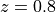

source
This section describes how Lenstool simulate sources.
grid int
If int = 1, the sources are placed on a regular grid of size n_source
n_source in the source plane corresponding to the field in the image plane described in section champ. If the polaire is set, then sources are placed on a polar grid. If int = 0, then sources are placed randomly in the rectangular field corresponding to the source plane of the field described in section champ.
random int
This force the seed value for the random number generator, better if negative. By default, Lenstool uses a random seed based on the local time on the machine.
n_source int
Number of sources to draw.
elip_max float
Maximum ellipticity of the drawing sources. The ellipticity of the sources is drawn from 0 to float with a uniform law.
dist_z int float1 float2
Specify how Lenstool draw the redshift of the sources.
If int = 0, all the redshift will be set to the value specified by the keyword z_source.
If int = 1, the redshifts will be drawn with a uniform law between redshifts float1 and float2.
If int = 2 and the smail keyword is set, the redshifts will be drawn with a Smail et al. distribution.
z_source float
Redshift of the sources without redshift in Lenstool. Default value: .
taille float
Set the size of the source in arcsecond.
smail float1 float2 float3
Specify the shape of a Smail et al. distribution, from which redshifts are randomly drawn.